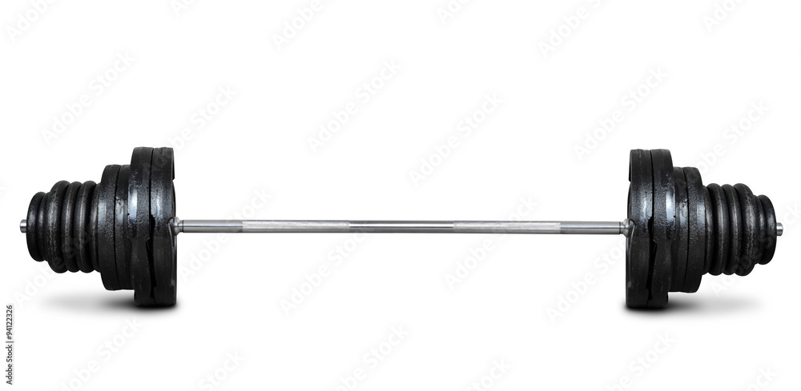

La musculation est une activité physique visant au développement des muscles squelettiques, pratiquée dans le but d'acquérir plus de force, d'endurance ou de volume musculaire. Dans ces exercices, une force, par exemple la gravité dans le cas de l'utilisation d'haltères ou de bandes élastiques, est opposée de manière répétitive à la force générée par la contraction des muscles. Cette activité est généralement pratiquée en intérieur, comme dans une salle de sport.
Les bienfaits de la musculation et l'entrainement physique sont notables. En effet, un bon régime d'entrainement physique a été prouvé comme étant bénéfique pour la santé physique et mentale de l'individu1,2. La musculation aurait notamment un impact sur la santé générale, la circulation sanguine, les préventions des blessures, le ralentissement des signes de vieillissement3...
La musculation est la base de la pratique du culturisme et de plusieurs sports de force comme l'haltérophilie. Elle est aussi une préparation physique dans de nombreux sports nécessitant une condition physique solide (notamment pour les sportifs de haut niveau). La musculation douce fait aussi partie de nombreuses méthodes d'amélioration de la condition physique (fitness, gymnastique) ou de méthodes de soin (kinésithérapie).
On distingue la musculation traditionnelle (avec poids) de la musculation au poids du corps.